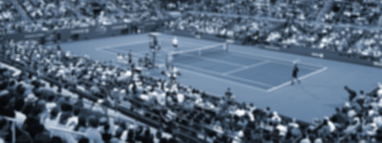

<ion-header translucent no-border>
  <ion-toolbar>
    <ion-buttons slot="start">
      <ion-button color="light">
        <ion-icon slot="start" name="back"></ion-icon>
        Favorites
      </ion-button>
    </ion-buttons>
    <ion-title>&nbsp;</ion-title>
    <ion-buttons slot="end">
      <ion-button>
        <ion-icon slot="icon-only" src="../../assets/checkmark-filled.svg"></ion-icon>
       </ion-button>
    </ion-buttons>
  </ion-toolbar>
</ion-header>

<ion-content fullscreen="true"  >
    <div class="card">
      <div class="header">
        
        <div class="avatar">
          
        </div>
      
      </div>
      <div class="card-body">
        <div class="user-meta ion-text-center">
          <h3 class="playername">{{User?.first_name}}</h3>
          <h5 class="country">{{User?.last_name}}</h5>
          <h6 class="ranking">{{User?.email}} <ion-chip>
              <ion-label>2</ion-label>
            </ion-chip>
          </h6>
        </div>

        <ion-button expand="full" color="primary">http://rogerfederer.com</ion-button>
        <ion-button expand="full" color="secondary">@RogerFederer on Twitter</ion-button>
        <ion-button expand="full" color="secondary">View profile at ATP</ion-button>
        <br/>

      </div>
    </div>
</ion-content>